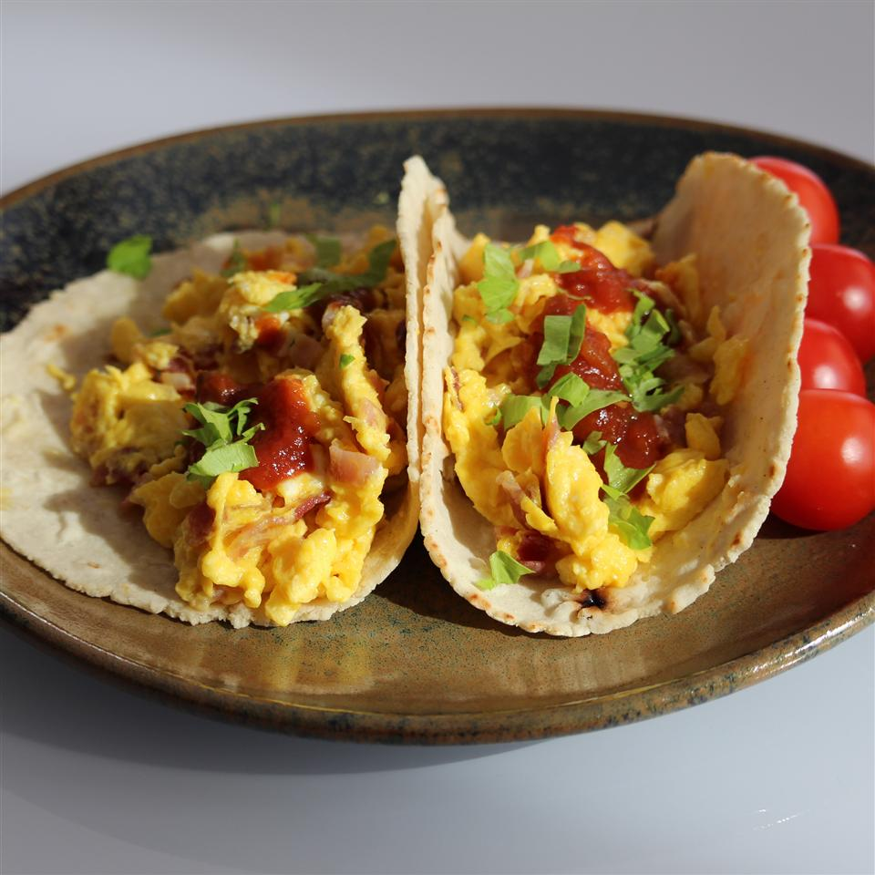

Eggs and bacon tacos

Description
This is a quick and easy recipe for tasty bacon and egg breakfast tacos. Serve with salsa if desired.
Ingridiens
- 6 eggs
- 1/4 cup crumbled cooked bacon
- 2 tablespoons butter
- 3 slices American cheese, diced
- 1/4 teaspoon salt
- 1/4 teaspoon ground black pepper
- 6 flour tortillas
- 1 cup salsa (Optional)
Steps
- Whisk eggs together in a bowl; stir in bacon.
- Melt butter in a skillet over medium heat. Add egg mixture; cook and stir until eggs are completely set, 2 to 3 minutes. Stir in American cheese, salt, and pepper.
- Wrap tortillas in damp paper towels; microwave until warmed through, 30 seconds to 1 minute.
- Spoon 1/4 cup egg mixture into the center of each tortilla; fold sides to cover. Serve with salsa.